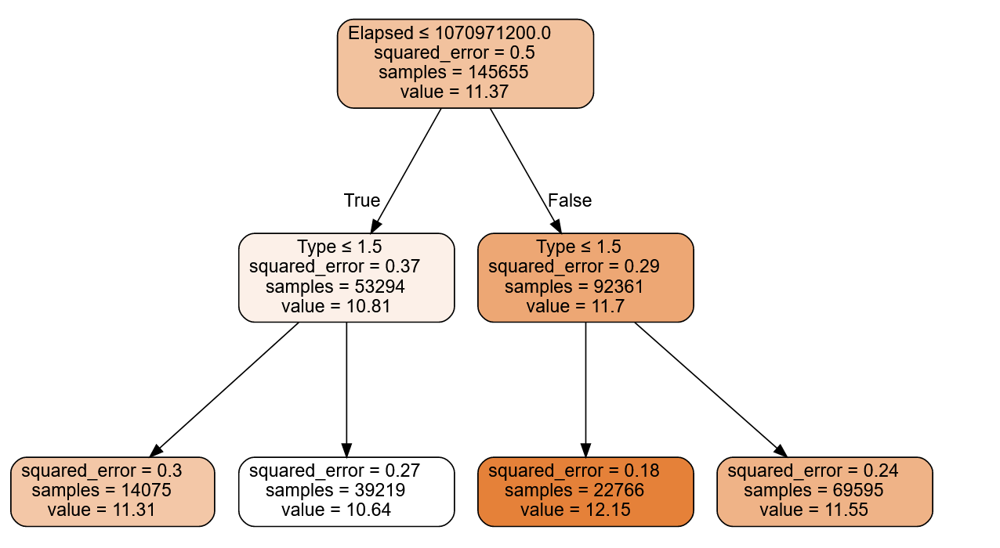

m = DecisionTreeRegressor(max_leaf_nodes=4)
m.fit(xs, y);
draw_tree(m, xs, size=10, leaves_parallel=True, precision=2)Decision Trees and Random Forests
Using Swansea property prices as a regression example of random forests

Decision Trees
A decision tree asks a series of binary questions about the data, whereupon the data is split into two branches. For each of these branches another question can be asked, or a prediction made. The branches continue until a prediction is made.
These are created using training data and can subsequently be used with test data.
DecisionTreeRegressor?
DecisionTreeRegressor( *, criterion='squared_error', splitter='best', max_depth=None, min_samples_split=2, min_samples_leaf=1, min_weight_fraction_leaf=0.0, max_features=None, random_state=None, max_leaf_nodes=None, min_impurity_decrease=0.0, ccp_alpha=0.0, )
Changing paramaters

m = DecisionTreeRegressor(max_leaf_nodes=7)
m.fit(xs, y);
draw_tree(m, xs, size=10, leaves_parallel=True, precision=2)m = DecisionTreeRegressor(max_leaf_nodes=7,max_depth=2)
m.fit(xs, y);
draw_tree(m, xs, size=10, leaves_parallel=True, precision=2)m = DecisionTreeRegressor(max_leaf_nodes=7,min_samples_split=30_000)
m.fit(xs, y);
draw_tree(m, xs, size=10, leaves_parallel=True, precision=2)m = DecisionTreeRegressor(max_leaf_nodes=7,min_samples_leaf=30_000)
m.fit(xs, y);
draw_tree(m, xs, size=10, leaves_parallel=True, precision=2)
# DecisionTreeRegressor?m = DecisionTreeRegressor(max_features=3,max_leaf_nodes=10)
m.fit(xs, y);
draw_tree(m, xs, size=10, leaves_parallel=True, precision=2)Hyper Parameters
| Parameter | Description | Default |
|---|---|---|
| max_depth | The maximum number of branches to get to the result. ie top to bottom length. |
None |
| max_leaf_nodes | The total number of branches | None |
| min_samples_split | The minimum number of samples required to split an internal node | 2 |
| min_samples_leaf | The minimum number of samples required to be at a leaf node. | 1 |
| max_features | Maximum number of features (i.e. parameters using to fit or X) | None |
Random Forests
Random forests use many decision trees using ensembling (combining multiple models). Today it is, perhaps, the most widely used and practically important machine learning method.
Random forests uses Bagging as the ensemble method. The other main one being Boosting.
In bagging many decision tree models are combined together by averaging them. Each decision tree is trained on a different data subset and can have different parameters to fit to the data.
“Bagging Predictors” Leo Breiman > : Bagging predictors is a method for generating multiple versions of a predictor and using these to get an aggregated predictor. The aggregation averages over the versions… The multiple versions are formed by making bootstrap replicates of the learning set and using these as new learning sets. Tests… show that bagging can give substantial gains in accuracy. The vital element is the instability of the prediction method. If perturbing the learning set can cause significant changes in the predictor constructed, then bagging can improve accuracy.
Here is the procedure that Breiman is proposing:
- Randomly choose a subset of the rows of your data (i.e., “bootstrap replicates of your learning set”).
- Train a model using this subset.
- Save that model, and then return to step 1 a few times.
- This will give you a number of trained models. To make a prediction, predict using all of the models, and then take the average of each of those model’s predictions.
| Decision trees | Random Forests |
|---|---|
| Can suffer from overfitting. Care should be taken with the hyper parameters and use of validation data |
Subsets of the data are used for each model and the results averaged So overfitting is mostly taken care of |
| Faster computation | Slower |
| Formulate a set of rules fore predictions | No rules |
Hyper Parameters
| Parameter | Description | Default |
|---|---|---|
| n_estimators | number of trees the algorithm builds before averaging the predictions | 100 |
| max_features | Maximum number of features (i.e. parameters using to fit or X) | 1.0 (regression or sqrt (classification) |
| min_samples_leaf | The minimum number of samples required to be at a leaf node. | 1 |
| n_jobs | How many processors can be used =1 uses one processor, =-1 no limit on number |
None |
| oob_score | OOB=Out of the bag. In this one-third of the sample is not used to train the data instead used to evaluate its performance | False |
One of the most important properties of random forests is that they aren’t very sensitive to the hyperparameter choices, such as max_features. You can set n_estimators to as high a number as you have time to train—the more trees you have, the more accurate the model will be. max_samples can often be left at its default, unless you have over 200,000 data points, in which case setting it to 200,000 will make it train faster with little impact on accuracy. max_features=0.5 and min_samples_leaf=4 both tend to work well, although sklearn’s defaults work well too.
FastAI
 https://scikit-learn.org/stable/auto_examples/ensemble/plot_ensemble_oob.html > In the plot, the blue plot line uses the fewest features and the green line uses the most (it uses all the features). As you can see in <>, the models with the lowest error result from using a subset of features but with a larger number of trees.
https://scikit-learn.org/stable/auto_examples/ensemble/plot_ensemble_oob.html > In the plot, the blue plot line uses the fewest features and the green line uses the most (it uses all the features). As you can see in <>, the models with the lowest error result from using a subset of features but with a larger number of trees.
FastAI
m = DecisionTreeRegressor(max_leaf_nodes=4)
m.fit(xs, y);
samp_idx = np.random.permutation(len(y))[:500]
dtreeviz(m, xs.iloc[samp_idx], y.iloc[samp_idx], xs.columns, dep_var,
fontname='DejaVu Sans', scale=1.6, label_fontsize=10,
orientation='LR')